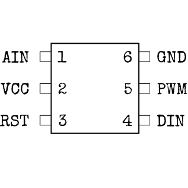
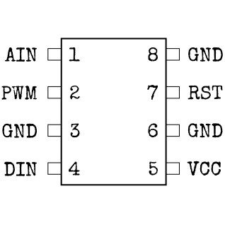

En caso del microcontrolador
Sí, se llama "micro"-controlador aunque esta cosa sea bastante grande. Probablemente sea porque puede causar una explosión bastante grande...
- Usa el tipo del controlador impreso para determinar su tamaño y configuración de pines con los diagramas de debajo.
- La marca blanca del controlador indica dónde está el pin con el número 1. Los otros pines están en orden ascendiente en el lado del pin 1, y luego continúan hacia el otro lado en sentido contrario.
- Usa la tabla de debajo para determinar el código de colores correcto por cada elemento conectado.
- Por cada pin, elige el elemento correcto pulsando los botones UP and DOWN y confirmando tu respuesta con el botón OK (el siguiente pin será seleccionado automáticamente).
Configuraciones
(destacables)Controlador Strike (STRK):



Controlador Diode (LEDS):


Controlador Countdown (CNTD):